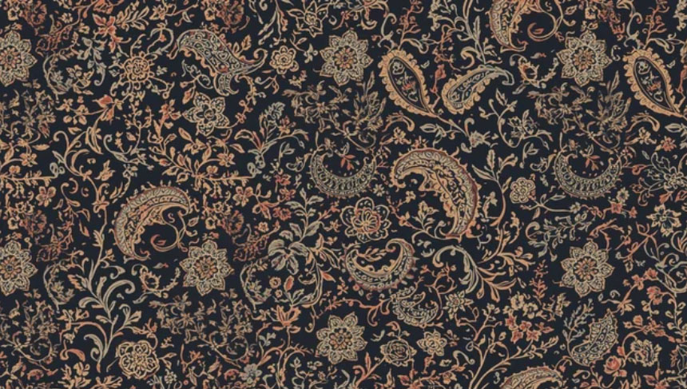
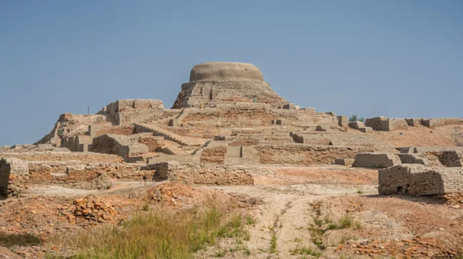
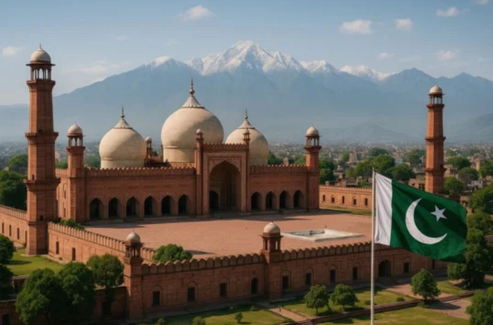
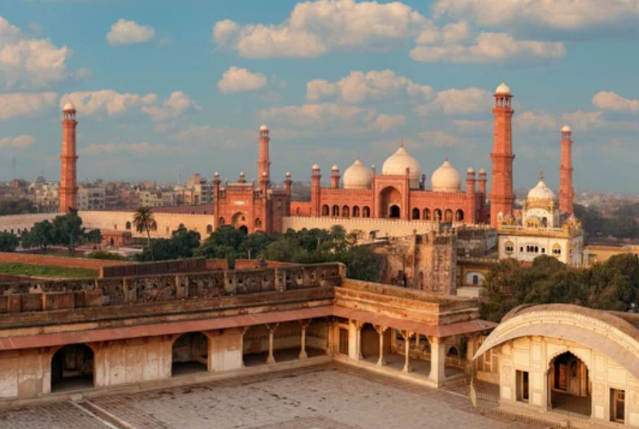
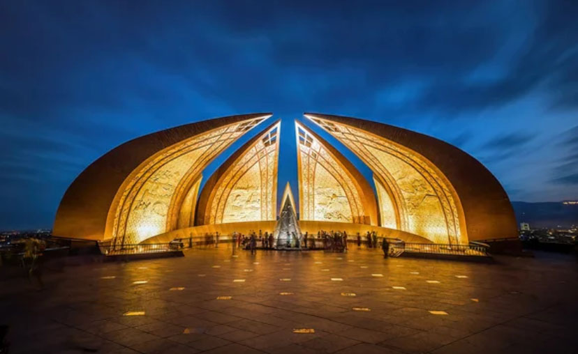
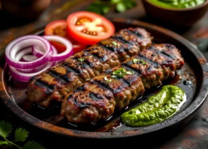
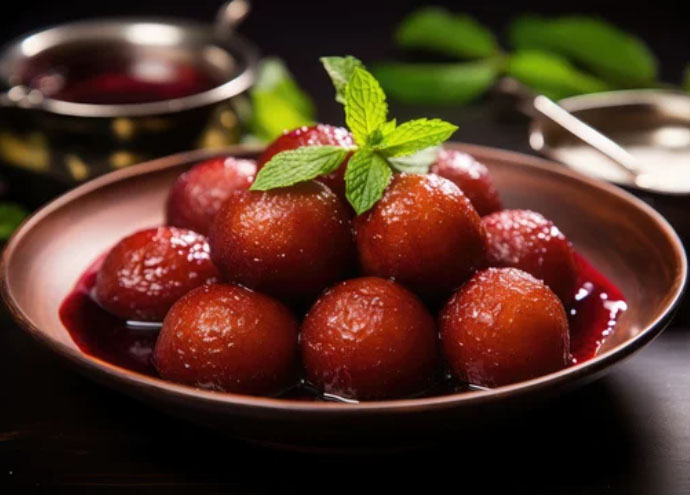

Between ancient ruins and towering peaks, I found a silence that speaks—Pakistan, unforgettable.
From the ruins of Mohenjo-daro to the grandeur of Badshahi Mosque and the towering presence of K2, discover a land where civilizations, faith, and wild landscapes converge in timeless harmony.

Where the silent ruins of one of the world’s earliest cities still echo the dawn of civilization.

A timeless Mughal masterpiece where red sandstone and marble reflect centuries of faith and imperial grandeur.
A towering giant of ice and stone where nature reveals its most raw and unforgiving beauty.
From the coastal chaos of Karachi to the cultural depth of Lahore and the quiet order of Islamabad, explore a nation where past and present unfold in striking contrasts.
The modern evolution of the Indus Valley Civilization—Pakistan's largest city, where chaos, commerce, and the sea intersect.

An ancient capital steeped in Mughal heritage, where architecture, food, and art reveal the truest essence of Pakistan.

A quiet, planned capital city. In contrast to other cities, it represents the orderly and modern face of the nation.（The photo shows Pakistan Monument.）
From aromatic Biryani to rich stews, sizzling Chapli Kebab, and syrup-soaked Gulab Jamun, Pakistan’s cuisine is a deep, layered journey of flavor shaped by history, culture, and fire.
Fragrant rice layered with spice and soul.

Crispy, juicy, and boldly spiced.

Soft sweetness soaked in syrup.
From the ruins of Mohenjo-Daro to the soaring peaks of the Karakoram, Pakistan’s story is an epic of survival and spirituality—a land where ancient wisdom and modern identity converge.
モヘンジョダロやハラッパーなどの都市が栄えた青銅器時代の文明。
ダリウス1世の時代にインダス川流域を支配。
アレクサンドロス大王が征服。
ギリシャ文化が広がる。
アショーカ王の時代に仏教が広まる。
ガンダーラ美術が栄え、仏教が隆盛。
西部地域を支配。
イスラム教が定着。
アフガニスタンを拠点にインド北部まで勢力を拡大。
ガズナ朝を滅ぼし、広範囲を支配。
北インドを支配し、パキスタン地域も含む。
バーブルが建国し、イスラム文化が隆盛。
イギリスの植民地支配下に置かれる。
インドから分離独立し、イスラム教徒の国家として成立。
バングラデシュとして独立。
民主制と軍政を繰り返しながら現在に至る。
1998年：核実験を実施
1999年：ムシャラフ陸軍参謀総長による軍事クーデター
2007年：非常事態宣言発出
2008年：退陣と亡命。軍政から民政への転換
2008年：インドのムンバイで起きた同時多発テロ（パキスタン拠点の武装集団が関与）
2009年：ムシャラフ政権時代から始まった「パキスタン・タリバン運動（TTP）」などの過激派によるテロが、2009年にピークを迎える。
近年の再悪化 (2021年以降): アフガニスタンでのタリバン復権（2021年）後、再びテロが急増
パキスタンは、古代文明からイスラム文化、そして近代の独立運動まで、多様な歴史を持つ国です。
第1次印パ戦争（1947年）
カシミール地方の帰属をめぐる争い。国連の仲裁で停戦し、停戦ライン（実効支配線）が引かれた。
第2次印パ戦争（1965年）
再びカシミール地方の領有権をめぐり衝突。ソ連の仲裁（タシケント宣言）により現状維持で停戦。
第3次印パ戦争（1971年）
東パキスタンの独立運動にインドが介入。パキスタンが敗北し、東パキスタンがバングラデシュとして独立。
実はパキスタンは「スリランカ政府」を助けていた。
皮肉なことに、かつて分裂を経験したパキスタンは、スリランカ内戦（1983年から2009年にかけて展開されたスリランカ政府とタミル・イーラム解放のトラ (LTTE) による内戦）ではLTTEを潰すためにスリランカ政府に武器や軍事訓練を提供していました。 自分たちがインドに支援されたバングラデシュの独立で苦い思いをしたため、「インドが関与する分離独立運動（LTTE）」を絶対に成功させたくないという執念があったようです。
パキスタン・バングラデシュの歴史（東西パキスタンの分裂）とLTTEには、「多民族国家における分離独立」という共通点があるため、比較すると非常に興味深い発見があります。
LTTEと東西分裂の「共通点」と「決定的な違い」
【「言語」による差別と反発】
東西パキスタン： 西側が「ウルドゥー語」を強要し、東側（ベンガル語）が反発しました。
スリランカ： 多数派のシンハラ人が「シンハラ語」を唯一の公用語とした（1956年）ことで、タミル人が反発し、LTTEの武装闘争につながりました。
【インドの立ち位置】
バングラデシュ独立： インドは東パキスタンを全力で支援し、パキスタン軍を降伏させて独立を成功させました。
LTTE： インドは当初タミル人を支援しましたが、後に自国の分離主義への影響を恐れて平和維持軍（IPKF）を派遣し、LTTEと衝突する複雑な動きを見せました。
【結末の違い】
バングラデシュ： 1971年に独立を勝ち取りました。
LTTE： 2009年にスリランカ政府軍によって壊滅させられ、独立の夢は絶たれました。